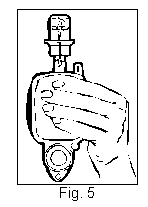

RÉSUMÉ DES CARACTÉRISTIQUES DU PRODUIT
ANSM - Mis à jour le : 21/01/2003
CHLORURE DE SODIUM SMART DOSE 0,9 %, solution pour perfusion
2. COMPOSITION QUALITATIVE ET QUANTITATIVE
Chlorure de sodium .............................................................................................................................. 0,9 g
Pour 100 ml.
Osmolarité: 300 mOsm/l
Pour la liste complète des excipients, voir rubrique 6.1.
Solution pour perfusion.
4.1. Indications thérapeutiques
Véhicule pour administration intraveineuse de substances actives dissoutes.
4.2. Posologie et mode d'administration
Voir les instructions d'administration de la substance active dissoute.
1 g de chlorure de sodium correspond à 17 mmol de sodium.
CHLORURE DE SODIUM SMART DOSE 0,9 % doit être uniquement utilisé comme diluant et véhicule de médicaments administrés par perfusion intraveineuse, à un débit compatible aux débits spécifiés pour CHLORURE DE SODIUM SMART DOSE 0,9 % (50, 100 et 200 ml/heure). Pour informations supplémentaires, voir section 6.5.
Utiliser CHLORURE DE SODIUM SMART DOSE 0,9 % uniquement avec les prolongateurs de perfusion SmartDose. Le débit de perfusion est contrôlé par le prolongateur de perfusion SmartDose approprié (voir 4.4).
Ce médicament ne doit pas être utilisé dans les cas suivants:
· chez le nouveau-né
· en cas de perfusion à haut risque
· en cas d'hypernatrémie et d'hyperchlorémie.
Par ailleurs, tenir compte des contre-indications de la substance active dissoute.
4.4. Mises en garde spéciales et précautions d'emploi
Le système SmartDose doit être administré uniquement par des opérateurs formés à son utilisation.
Comme toutes les solutions pour perfusion, CHLORURE DE SODIUM SMART DOSE 0,9 % doit être administré avec précaution aux patients présentant un œdème pulmonaire, une insuffisance cardiaque congestive, une oligurie ou une anurie.
Le contenu en sodium doit être pris en compte en cas d'hyperhydratation (insuffisance cardiaque etc..).
A usage unique. Ne pas stériliser à nouveau ou réutiliser.
N'utiliser CHLORURE DE SODIUM SMART DOSE 0,9 % qu'en tant que diluant et véhicule de médicaments administrés par voie intraveineuse.
N'utiliser que des solutions limpides et incolores dans des pompes de perfusion intactes.
Les trajets internes en contact avec la solution de perfusion et les zones protégées par des embouts protecteurs intacts sont stériles et apyrogènes.
La préparation de la solution pour perfusion doit être réalisée par un opérateur qualifié dans des conditions aseptiques.
Lors de la préparation de la solution pour perfusion avec des médicaments, tenir compte des risques de contamination microbienne.
Utiliser CHLORURE DE SODIUM SMART DOSE 0,9 % uniquement avec les prolongateurs de perfusion SMARTDOSE.
Le débit de perfusion est contrôlé par le prolongateur de perfusion SMARTDOSE. Les prolongateurs de perfusion sont disponibles pour des débits de 50, 100 et 200 ml/heure, correspondant à des temps de perfusion de respectivement 2 heures, 1 heure et ½ heure.
L'utilisation d'un prolongateur de perfusion non destiné à CHLORURE DE SODIUM SMART DOSE 0,9 % produira un débit de perfusion extrêmement élevé et incontrôlable !
Ne pas utiliser CHLORURE DE SODIUM SMART DOSE 0,9 % pour l'administration de substances hautement actives exigeant un dosage en mg/kg de poids corporel par minute.
Ne pas connecter CHLORURE DE SODIUM SMART DOSE 0,9 % en série.
Ne pas utiliser CHLORURE DE SODIUM SMART DOSE 0,9 % avec du sang ou des produits sanguins.
4.5. Interactions avec d'autres médicaments et autres formes d'interactions
Tenir compte des interactions relatives au médicament dissous administré avec CHLORURE DE SODIUM SMART DOSE 0,9 %.
La sécurité d'emploi pendant la grossesse et l'allaitement dépend du médicament dissous.
4.7. Effets sur l'aptitude à conduire des véhicules et à utiliser des machines
Ils dépendent du médicament dissous.
Si CHLORURE DE SODIUM SMART DOSE 0,9 %, solution pour perfusion est utilisée selon les recommandations et si les instructions d'utilisation sont respectées, les effets indésirables sont fonction du médicament dissous.
Tenir compte des informations relatives au surdosage du médicament dissous.
5. PROPRIETES PHARMACOLOGIQUES
5.1. Propriétés pharmacodynamiques
Code ATC: V07AB
Le sérum physiologique isotonique contenu dans CHLORURE DE SODIUM SMART DOSE 0,9 % permet la dissolution et la dilution de substances médicamenteuses destinées à la perfusion intraveineuse.
Le mélange peut être administré à des débits de 50, 100 et 200 ml/h, correspondant à des temps de perfusion de respectivement 2 heures, 1 heure et ½ heure.
5.2. Propriétés pharmacocinétiques
Les propriétés pharmacocinétiques de la solution de perfusion dépendent de la substance active dissoute.
5.3. Données de sécurité préclinique
Les données précliniques de la solution perfusée dépendent du médicament dissous.
La biocompatibilité des matériaux utilisés dans CHLORURE DE SODIUM SMART DOSE 0,9 % a été démontrée par des tests biologiques de toxicités locale et systémique, de cytotoxicité in vitro, de mutagénicité et sensibilisation de contact retardée.
Eau pour préparations injectables.
Lors de l'ajout du médicament dissous, une attention particulière doit être prêtée aux modifications physico-chimiques (telles que décoloration ou sédimentation).
La compatibilité de la substance active reconstituée ou diluée doit être évaluée avant utilisation.
2 ans.
6.4. Précautions particulières de conservation
A conserver à une température ne dépassant pas 25°C.
6.5. Nature et contenu de l'emballage extérieur
CHLORURE DE SODIUM SMART DOSE 0,9 % est une pompe de perfusion à usage unique, composée d'un copolymère de polypropylène et d'un copolymère de polypropylène-polystyrène et ne contenant pas de plastifiants.
Une unité SMARTDOSE contient 100 ml de solution de chlorure de sodium à 0,9%.
Caractéristiques de la pompe de perfusion SMARTDOSE
Contenance totale: 110 ml
Volume maximum de médicament dissous: 5 ml.
Pression positive: 0,65 bar
Durée de pression positive: 2 ½ heures
Débits: 50, 100 et 200 ml / heure (en fonction du prolongateur de perfusion SMARTDOSE choisi)
Précision moyenne du débit (volume de 100 ml): ± 15 % à température ambiante (25 °C)
Volume résiduel: < 4 ml
Conditionnement: 1 x 100 ml, 20 x 100 ml
6.6. Précautions particulières d’élimination et de manipulation
ATTENTION: Utiliser le produit immédiatement après reconstitution ou dilution, le stockage de pompes SMARTDOSE en cours d'utilisation n'est pas recommandé.
Commencer la perfusion dans les 10 minutes suivant l'activation du système SMARDOSE. La pression nécessaire pour vider la pompe SMARTDOSE demeure constante pendant 2 heures et demie.
Fig. 2:
· Vérifier l'état de l'adaptateur, du film de protection stérile et de la pompe SMARTDOSE.
· Jeter toute unité endommagée ou non hermétique.
· Vérifier le liquide derrière le bouton de démarrage. Il doit être incolore.
· Jeter l'unité si, derrière le bouton de démarrage, le liquide est bleuté.
· Nettoyer le bouchon du flacon de médicament avec une solution antiseptique avant de l'adapter à la pompe SMARTDOSE.
· Retirer le film de protection stérile recouvrant l'adaptateur.
ATTENTION ! L'adaptateur du flacon de médicament contient une aiguille.
· Poser le flacon sur un support stable (ex: une table).
· Saisir le flacon fermement dans la main et POUSSER l'adaptateur vers le bas sur le flacon.
· Tirer sur la languette pour enlever complètement le joint étanche.
· Maintenir l'adaptateur fermement et le tourner d'un quart de tour dans l'un ou l'autre sens pour rompre l'étanchéité (cela permet l'écoulement entre la pompe SMARTDOSE et le flacon de médicament). Pousser ensuite fermement l'adaptateur vers le haut. Ainsi par pression sur la pompe SMARTDOSE, le soluté physiologique peut passer dans le flacon de médicament.
· Tenir la pompe SMARTDOSE flacon en bas.
· Presser la pompe SMARTDOSE de façon à transférer le soluté physiologique dans le flacon, puis relâcher. Répéter cette opération jusqu'à ce que le flacon soit rempli à moitié.
Conseil: En cas d'arrêt de l'écoulement, pousser l'adaptateur vers le haut, jusqu'à ce que le soluté physiologique recommence à couler.
· Secouer légèrement en effectuant un mouvement rotatoire de façon à bien dissoudre la substance médicamenteuse.
Conseil: Bien tenir le flacon pour éviter qu'il se déconnecte, notamment si le flacon est grand.

· Retourner la pompe de façon à ce que le flacon soit au-dessus.
· Presser la pompe SMARTDOSE de façon à ce qu'elle aspire la solution que contient le flacon, puis relâcher. Répéter cette opération jusqu'à ce que le flacon soit complètement vide.
Conseil: En cas d'arrêt de l'écoulement, pousser l'adaptateur vers le bas, jusqu'à ce que le soluté physiologique recommence à couler.
· Secouer légèrement pour mélanger la solution dans la pompe SMARTDOSE.
· Quand le mélange est terminé, retirer l'adaptateur et le flacon de la pompe SMARTDOSE
· Si un étiquetage supplémentaire est requis, les données de reconstitution ou de dilution sont notées sur l'étiquette présente sur la pompe. Il est aussi possible d'accrocher l'adaptateur et le flacon au crochet.
· Choisir le prolongateur de perfusion SMARTDOSE correspondant au débit souhaité.
· Fermer le clamp du prolongateur de perfusion.
· Raccorder à la pompe l'embout « luer lock » de couleur du prolongateur de perfusion, comme indiqué sur la figure ci-dessus.
· S'assurer que le prolongateur de perfusion est correctement fixé.
ATTENTION: N'utiliser SMARTDOSE qu'avec les prolongateurs de perfusion SMARTDOSE.
En cas d'inversion involontaire des connexions du kit d'administration, le filtre éliminateur d'air ne peut plus fonctionner correctement. La filtration particulaire est tout de même assurée.
· Pour activer SMARTDOSE, appuyer avec le pouce sur le bouton d'amorçage. La pompe SMARTDOSE est automatiquement mise sous pression.
ATTENTION: Ne pas utiliser d'objets tranchants ou pointus.
· La zone entourant le bouton d'amorçage se colore progressivement en bleu lorsque l'activation fonctionne bien.
· Pour amorcer:
Tenir la pompe SMARTDOSE (bouton d'amorçage vers le bas) afin d'évacuer l'air résiduel vers l'embout terminal du prolongateur.
· Pour évacuer l'air, ouvrir le clamp du prolongateur de perfusion.
· Refermer le clamp lorsque la solution commence à perler.
· Raccorder l'extrémité libre du prolongateur de perfusion SMARTDOSE à l'accès vasculaire du patient selon les recommandations du professionnel de santé Pour amorcer la perfusion, ouvrir le clamp dans les 10 minutes suivant l'activation de la pompe SMARTDOSE.
Conseil: La précision du débit dépend de la température ambiante. La précision du débit moyen de ± 15 % est assurée à une température ambiante comprise entre 20°C et 30°C.
7. TITULAIRE DE L’AUTORISATION DE MISE SUR LE MARCHE
PRO MED GmbH
Wiener strasse 131
4020 Linz
AUTRICHE
8. NUMERO(S) D’AUTORISATION DE MISE SUR LE MARCHE
· 359 971-8: 100 ml en pompe (polypropylène/polypropylène-polystyrène). Boîte de 1.
· 359 972-4: 100 ml en pompe (polypropylène/polypropylène-polystyrène). Boîte de 20.
9. DATE DE PREMIERE AUTORISATION/DE RENOUVELLEMENT DE L’AUTORISATION
[à compléter par le titulaire]
10. DATE DE MISE A JOUR DU TEXTE
[à compléter par le titulaire]
Sans objet.
12. INSTRUCTIONS POUR LA PREPARATION DES RADIOPHARMACEUTIQUES
Sans objet.
Médicament non soumis à prescription médicale.